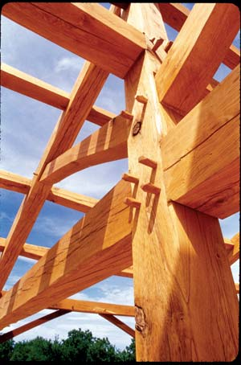
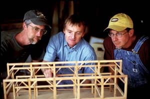
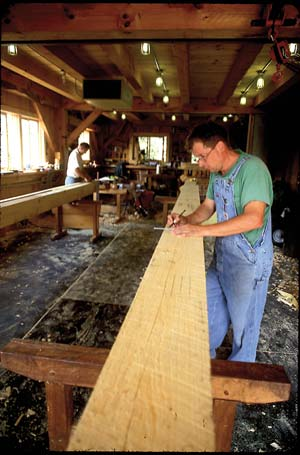
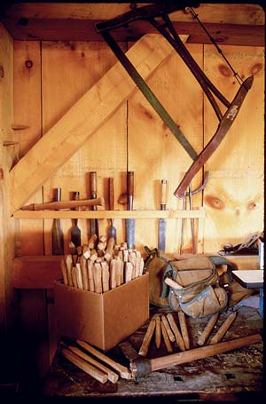
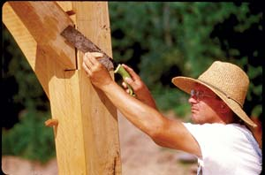
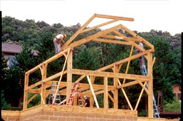
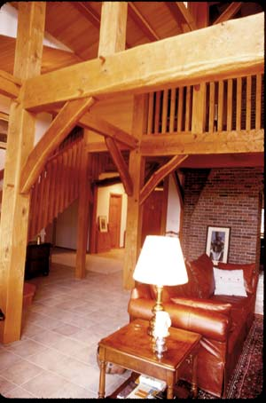
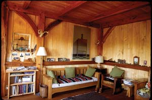

Wild Rose Timber Framers
Three business partners integrate their working lives with their values.
By David Cavagnaro
April/May 2008
Daylight fills the shop where the three partners in Wild Rose Timberworks - Dale Kittleson, Mark Webber and Chris Wasta - ply their venerable trade. The slate-dark floor is littered with sawdust and wood chips, the walls hung with tools of ancient pedigree: chisels, drawknives, bow saws and trammel points. Wasta sits among a pile of bur oak shavings, making timber frame pegs with a drawknife at his handmade shaving horse.
He quotes an old saying, “Make a life, not a living.” Webber and Kittleson are quick to admit that everyone has to make a living, and that theirs has been hard earned. But they also find it enormously satisfying.
Named after the state flower of Iowa, Wild Rose Timberworks operates out of a timber frame shop next to Wasta’s timber frame house in the wooded hills of northeast Iowa, near the area where all three men have their roots. All avid nature lovers, they grew up exploring the hardwood forests of the upper Midwest which now sustain their livelihood.
They’ve been working together for 15 years. Kittleson and Webber already knew each other in 1992. Having joined forces on numerous construction and woodworking jobs, they had discovered the rare joy of collaboration that may be found only among kindred spirits. Enter Wasta, who wanted to use timber-frame construction on his own homestead nearby. He realized he would need help for such an effort, and local inquiries led to Webber and Kittleson - and the discovery of a tradition of utilitarian timber framing in a neighboring Amish community. After the three men cut the frames for Wasta’s shop, an Amish crew organized and ran the raising. After the shop was finished, the Wild Rose crew started on a new house nearby. Wasta has been living in the beautiful result ever since.
“Wood is good,” says Webber, grinning as he polishes a stunning piece of black cherry banister. “It does much more than you think it should,” he adds, to complete the line from Marjorie Weinman Sharmat’s children’s book, The Story of Bentley Beaver. On the other side of the shop, Kittleson is smoothing a large oak beam. Timber framing the Wild Rose way is significantly different from the rough-hewn barn construction of the Amish. After all, Wild Rose builds mostly modern 21st century homes, not 19th century barns.
Aesthetics, and a deep reverence for wood and the forests that provide it, play a huge role in the lifework of these craftsmen. “Traditions are never static,” Wasta says. “They either change with the changing needs of the times or they die.”
The Wild Rose Blossoms
Three years after their collaboration began, the Wild Rose partners tackled their first commercial job. They also settled into a true partnership as their business model. They decided early on, based upon compatibility and shared values, to remain a collaboration of three and to make all decisions by consensus. Dealing directly with clients and doing nearly all the work themselves, by hand, became central tenets of the business.
This approach dictated that they explore available forests and select, cut and mill their own timber. By doing their own logging, they discovered firsthand what kinds of wood best met their needs. Over time, they realized that they enjoyed the design process and the handwork more than the grunt labor of timbering. By selecting reliable, environmentally responsible local loggers and sawmills to provide most of their raw material, they freed up valuable time to concentrate on the work they loved best.
Some of the timber frames Wild Rose has built over the years are open structures such as park shelters. But most, whether studios, shops, cabins or houses, are enclosed and finished after the frame is up, leaving the beauty of the timber frame exposed inside. In their early days, the Wild Rose team did the finish work. But, as with logging, they refined their business model even further and decided to concentrate on frame construction only. Now, with the exception of some fine interior woodworking such as stairs or banisters, they leave the finish work to other contractors.
Any environmentally conscious person seeing a massive timber frame going up might rightly ask if such a building consumes more wood than standard construction. “Yes,” say the Wild Rose partners. But what brings their work in line with their value of sustainability is that all the wood is local, and 80 percent of their hardwood is selected from the resource stream that supplies disposable pallets and railroad ties (much shorter term uses). Most of it is white and bur oak from a two- or three-county area, but they also use black cherry, walnut and black locust. Lower grade trees from these supply streams are perfectly suited for timber framing and do not compete with trim, flooring and furniture grade hardwoods. White pine timbers come from plantation-grown trees in Wisconsin about 80 miles away. They also offer clients the option of using timber from the client’s own property.
Respect for sustainability influences the way Wild Rose works with potential clients. As much as individual taste and circumstances allow, all three partners work closely with homeowners throughout the design process, from site selection to building design. They encourage designs with energy-efficient advantages, such as southern exposure for maximum solar gain. Some have been off-the-grid houses. In fact, Kittleson built and lives in an off-grid, energy-independent home. Because they design frames around the size and kinds of wood available locally (as opposed to often much taller western-grown conifers), their structures tend to have smaller footprints. Timber frame homes are so solidly built that they will have a lifetime far longer than that of pallets and railroad ties, which the same wood might have been used to make. And if local history is any indication of the future, the timbers will eventually be re-used in other structures. Many local homes have been built or remodeled with recycled timbers from old barns or pioneer log cabins.
Not Like the Others
Because of their scale of operation, shared values and philosophy of life, the Wild Rose craftsmen have carved out a unique niche for themselves in the larger timber frame industry. They realized just how unique they were in November 2006, when they attended the Timber Framers Guild of North America conference in Roanoke, Va. The majority of the other businesses represented at the conference are larger and follow a more traditional top-down business model rather than a small partnership of equals. Most timber framers operate out of huge, highly mechanized shops, and many cater to a high-end market in which “McMansions” are more the rule than the exception. In some ways, Kittleson points out, mechanization (and the debt usually associated with it) drives prices up rather than making machine-made frames cheaper.
Observing this aspect of the industry confirmed that Wild Rose provides an exceptionally high quality, truly handcrafted product at a reasonable price. Wild Rose has been able to accomplish this by remaining small, by tackling only one project at a time, by emphasizing skilled labor rather than expensive machines, and by discovering new ways to grow the business without increasing size or volume. While still more expensive to build per square foot than conventional “stick construction,” Wild Rose frames have attracted a more middle-class clientele than has become typical in the industry. Prices (for the timber frame only) vary depending on a number of factors, but range from $12 per square foot for a basic structure like a barn to $40 per square foot for more complex structures.
A visit to the Wild Rose shop quickly reveals the handcrafted nature of their work. The design process with past clients has varied from a rough sketch on a napkin to full blueprints nine years in the making. After the design has been completed, detailed measurements are made for every necessary piece of wood. Source wood is located, rough milled and delivered outside the shop. Piece by piece, every timber is cut, shaped, notched and finished to exact specifications using the saws, chisels, planes and other hand tools that line the shop walls. The frames are built with housed joints where one piece is notched or grooved to receive the other, such as mortise and tenon, and must be measured and fashioned perfectly to fit together like a giant puzzle, square and plumb, when erected on the building site. As the pieces fit together, they are held tight with bur oak pegs, pounded in with beautifully crafted wooden mallets the partners make themselves.
The Value of Balance
The team’s evolution, now almost a decade and a half in the making, has had its share of ups and downs. “It’s been a long, slow grind,” Kittleson says, “but it’s easier to get over the rough spots if you are living your core values.” I have heard those values expressed and seen them in action repeatedly during the 20 years I have known these men and their families. They’re values honed by a Midwestern background and years of living close to nature: love of and respect for the natural world; time for and love of family; reverence for quality and craftsmanship; respect for hard work; respect for each other. And above all, balance and integrity.
“Life is more than work,” they have all said to me. Besides time with family, each has his own hobbies to balance work. All three love camping. In his spare time, Webber builds wooden boats. Kittleson, who was an avid kayaker before the kids arrived, still loves exploring the Mississippi River and other waterways with his family. I’ve long known Wasta to be a skillful fisherman and fly tier, but it wasn’t until I spotted an unlikely rack full of giant bamboo poles in the shop that I learned he is mastering the highly refined craft of making bamboo fly rods.
It is this consistency of core values guiding their lives, rather than making work choices that trump values, that impresses me so much about the livelihood they have created. As we sat amid the piles of wood shavings, smelling the sweet fragrance of oak and walnut, each in turn expressed the joy and satisfaction of knowing personally every piece of wood that goes into the making of the basic structure of a home, and knowing that those who live in that house will similarly come to know and appreciate each of those pieces.
Webber says their work is honest and depends on the inherent beauty of wood. Kittleson says “We’re not trying to make it look like something else; it’s as real as it gets.” They also speak of the long-term friendships they’ve made with their clients, who come to revere the wood as much as they do, and who respect and appreciate their craftsmanship.
I sense a quiet harmony as I watch Wasta, Kittleson and Webber quietly going about their daily tasks. This harmony stems from kindred spirits working together, from the wood itself and from life paths of integrity. And surely much of it must come from successfully integrating their work choices with their values.
Resources
Wild Rose Timberworks; 563-382-8500
Timber Frame Industry Information
Timber Framers Guild; 888-453-0879
Timber Frame Reading
Timber Frame Construction: All About Post-and-Beam Building, by Jack Sobon and Roger Schroeder (Storey Publishing)
Building the Timber Frame House, by Tedd Benson and James Gruber (Simon & Schuster)
The Timber-Frame Home, by Tedd Benson (Taunton Press)
Timber Framing for the Rest of Us, by Rob Roy (New Society Publishers)
David Cavagnaro is a freelance nature and horticultural photographer, author of several natural history books and frequent contributor to Mother Earth News. He has been homesteading in Iowa for 20 years and for eight of those was manager of the preservation garden at the Seed Savers Exchange.
|
 DAVID CAVAGNARO Traditional timber-frame structures use precisely fitted joints held in place by wooden pegs. No nails are used. |
 DAVID CAVAGNARO Dale Kittleson, Mark Webber and Chris Wasta design and build hand-cut timber frames. |
 DAVID CAVAGNARO Each timber is measured, marked and cut using age-old methods. |
|
 DAVID CAVAGNARO Using hand tools results in exceptional quality. |
 DAVID CAVAGNARO After the joints are complete, pegs may be trimmed flush with the timbers. |
 DAVID CAVAGNARO These timbers were measured and cut in the workshop. |
|
 DAVID CAVAGNARO Structures made of timber are strong and durable; they’re also attractive when the timbers are left exposed inside the building. |
 DAVID CAVAGNARO A timber-framed home provides a cozy environment. |
 DAVID CAVAGNARO Timber framing creates open spaces within a building. |